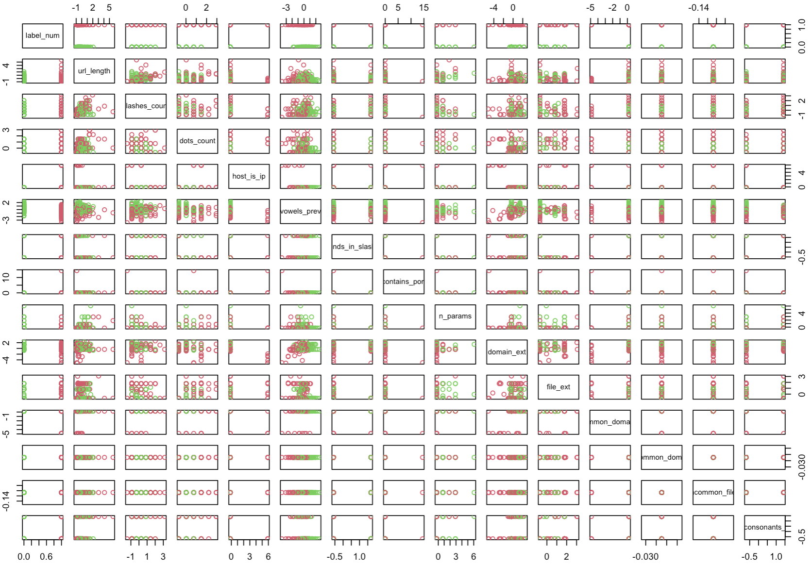
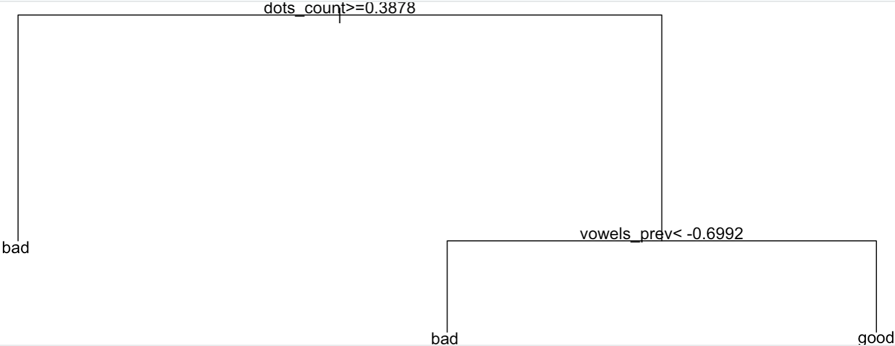
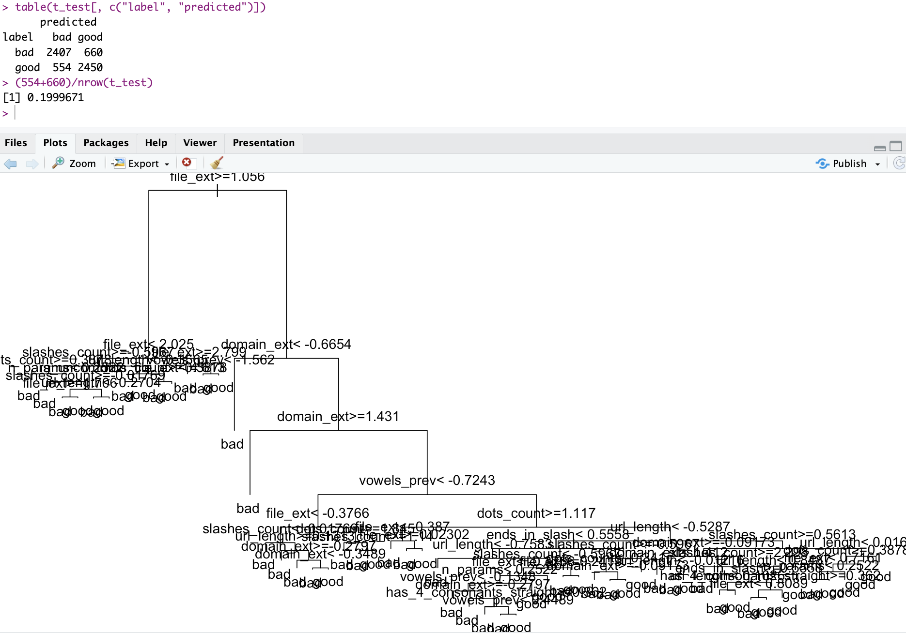

urls_df <- read.csv("https://raw.githubusercontent.com/faizann24/Using-machine-learning-to-detect-malicious-URLs/refs/heads/master/data/data.csv")
urls_df$url <- tolower(urls_df$url)
## Let's have a quick look, a.k.a. "EDA"
dim(urls_df)
> [1] 420464 2
table(urls_df$label) ## Imbalance, we might want e.g. to under-sample "good"
> bad good
75643 344821 Intro
I have a plan
I’m still working my way through a “practical demos” session on ML background for Cybersecurity.
See I have a “plan” in my head about how to introduce Machine Learning, including demystifying a bit the math behind it. The “plan” goes a bit like this:
We’ve seen recently a bit of what unsupervised learning can be about. For Cybersecurity, anomaly detection is a clear use-case. We’ve used the concept of distance between points. But there is more to this category (clustering per-se, but also dimensionality reduction is quite useful, for instance).
ML can be about making a line go through points (nicely). That’s regression. With sufficient data, you’re compressing information of relationships between dimensions to predict an outcome. In the simplest form, given x, you can estimate y. And the math is quite simple:
\[ y = \beta_0 + \beta_1x \]
Such a linear regression is then really of the realm of statistics. As such, there is little of practical application of that thing for us in this simplest form, as in Cybersecurity, many things are expected to be black or white. But maybe it’s not completely crazy to maybe estimate that the more time a machine is connected to the Internet, the higher the risk of infection (all other things being equal, that is). That could be a growing line. Sometimes things can be approximated with the appropriate transformations on the dimensions (say “independent variables”) and then used in a linear regression (so the “model is linear on its parameters”).
I’ll make an entry about linear regression soon(-ish), when I have time.
- ML can also be about making a line separate groups of things nicely, i.e. classifying stuff. In its simplest form, we will have input data, and will want to know in which one of two categories a given input should belong too. That’s our “run of the mill” Spam classifier.
Both regression (linear or not) and classification are usually considered to be the two most common supervised learning use-cases.
Then you have Reinforcement Learning (aka RL). So far, I have yet to personally come across a real-world cybersecurity application of that, although it is pretty cool a concept! (Actually a friend has demonstrated something with Honeypots and such…) But I’ll admit, I have played little with RL myself for now, and it’s a pending task of mine. It does sound appealing, and there are some papers out there to use RL for optimizing pentesting processes and such.
And then you have Self-Supervised Learning. The first time I read that I was like “Whaaaat?”. But that’s LLMs, as noted at the end of one of my most recent posts. You predict next word in a text, and check what actually comes in the… Rest of the text. So you only need… The text. Nifty. But I’m not too fond of it and have yet to think it through enough to come up with something practical beyond LLMs…
There is plenty more, but this is one way of putting categories to what ML is about.
Today’s intro
Alright, so I’ll skip some of the above, and today jump right onto this:
How does Supervised Machine Learning work, as applied to one cybersecurity-relevant classification use-case?
Somehow I feel it’s more fun to frame things a little into practical use-cases, instead of pure math (which I suppose is boring/threatening to quite a few).
Even then, be warned: This entry is pretty long. But hopefully it contains some important things and my wish is, it’s also understandable.
Contents
Classifying URLs into TWO categories
The data
In Cybersecurity sometimes getting to interesting datasets can be a bit challenging. After all, certain things are usually done behind closed doors. You can probably understand why. Which is why I like for instance this resource, secrepo.com.
Today, we’re gathering a seemingly simple dataset: A list of web URLs, very simply tagged as either good or bad. Nothing else. But, mind you, 420 thousand of’em.
Point number one: to do ML, it can help to have lots of data. (It’s not always necessary, but it’s usually a good idea.)
The objective
Today is about trying to distinguish (really just trying!) to classify URLs (“webpages”, for most) in two categories: Good or Bad. Why? Applications are for your protection, and can be used to recommend you to avoid certain websites, which in turn can be maybe used as a supplementary control for other security measures, such as detecting Phishing emails.
Can we make our computer tell us if a given URL is good or bad?
That’s it. That’s our goal for today. Using Machine Learning, of course. So we’re aiming to implement one (or more) model(s) to classify URLs. Based on data we already have. That’s supervised learning, more precisely a classifier.
Just to be very clear: This is all part of a preparation to an introduction on ML background for Cybersecurity. “Introduction” is the key here: I’m not aiming for complete, perfect, not even good, as long as I can convey certain concepts that I believe are relevant to grasp an idea at best of how ML works.
Even the code I put together is… Well, lacking. It’s not meant to be production grade.
There is nothing in the way of test-driven anything
Some of the regular expressions are simplistic
Some stuff will be badly filtered
The trained models are not good
The data is what it is, and I’m not trying to complement it
…
Please don’t come saying “this is not great”. I know. I only have so much spare time. This post is only my way to support with contents an interactive session I plan to give soon. There is a lot of good training on ML, Cybersecurity & al. out there. Go find it, if you want formal and/or good, detailed training.
If you’re fine with simply trying to wrap our heads around concepts, do keep reading.
The code
The code will be on my Github eventually. But for now, as usual, a few blocks of it:
Point number two: Imbalance is often bad. Here we have 4.5 times more good entries than bad entries. Now, why could that be bad? Here we’re going to try to learn from our data. If we keep the imbalance in the dataset, to make things simple, our model could learn that there is more good than bad. And maybe that’s what we want, but then that imbalance could affect the outcome of our model. Unless we want to use that imbalance for some reason, it’s probably best to manage it upfront.
How to remove imbalance? Well, one way (of surely many out there, only I only know a few), is to “under-sample” some of the over-represented class. Today we’re going to take proportionally less entries from good to train our model, making then sure that we have roughly half and half, of each class.
As per the class, it’s a binary choice, good or bad. We’ll create a variable to encode that as 0 or 1 (or the other way around, it’s irrelevant). That’s just to make things compatible with certain models, as most will expect numerical data.
urls_df$label_num <- ifelse(urls_df$label == "good", 0, 1)
urls_df$url_length <- nchar(urls_df$url)
## A bit of domain knowledge helps:
nrow(urls_df[urls_df$url_length > 300,]) / nrow(urls_df)
[1] 0.001203432Point number 3: Domain Knowledge is important. We’re going to leverage that today quite a bit. To begin with, we have 0.1% of the entries with URL length superior to 300 characters, and to make things cleaner, we’ll assume today these are… Irrelevant. So we remove them. Our classifier will hence not be trained with such data. And maybe that’s a bad idea, depending on your goals. For today, everything is fair game, we want to keep things simple.
Feature Engineering
Heck. We only have URLs. And a class. How is a machine suppose to go from there?
Let’s try to extract something akin’ to a signal out of that. So we’ve got already the length of each URL. And maybe that’s helpful. Are longer URLs more often bad than good? Well, for real long URLs, maybe a bit. But it’s not really definitive, is it?

Point number 4: Always look at the data. Don’t just run into the modelling, it’s not a good idea. Get a feeling of the data you want to work with. I can’t stress this enough.
Let’s keep going then. Again, domain knowledge is key. The good news is, most of us have seen thousands of URLs in our lifetime, so maybe we have a little understanding of what we could look for.
Too many slashes “/”? Too many “dots”? Maybe. So those could be two new “dimensions”. Although maybe these two are already somewhat expressed through the length of the URL? In other words, it might make sense that the longer the URL, the more dots and slashes.
Point number 5: That’s a correlation right there, and depending on how much two variables are correlated, maybe you’re better off with fewer variables. There is a lot of background statistics on this topic. And for ML algorithms, sometimes too many variables is a bad thing, more so if they don’t add any useful information.
For today, we’ll keep it. After all, we have for now only what, 3 variables to work with? We need more. I’m going to save you the pain of going through it all one by one, and propose my own few variables I thought we might consider for training our model, ALL extracted from the URLs themselves.
IP as host: Humans use “Domain Names” that are readable. You need a DNS entry for that, and you need to register things as the owner for the DNS entry, for legal reasons. So if you skip the DNS step, you can still have an IP address, but it will look like… An IP. It’s a bit far-fetched, but I’d argue if a URL reflects a Public IP, it’s either known good (ours or provided by some trusted third party), or - more often than not - it’s a bad indicator.
URL readability: So it’s not direct. A URL can of course contain stuff that’s purely technical. But we usually make an effort to make things readable: variable names, folder names, etc. Bad actors might want to obfuscate stuff or generate random folder or what-not. And so if a URL is mostly unreadable gibberish, I’d guess it’s a bad sign. Which we can “encode” as: How many vowels has the URL relative to its length? Does the URL contain things with 4 consecutive consonants (not usual in written english, although not good an indicator in some other languages…)? Again, both things are probably somewhat related, but not necessarily/completely. So I take both.
Is a port expressly identified in the URL? After the host, a column and number is usually not required for a normal website, it’s usually a default (443 or 80). So if you see “somehost.somedomain.com:12345”, something exotic is going on. Exotic for normal web browsing is weird (well, it’s exotic :D), and so not expected for good stuff.
We can keep going: Domain extension, file extension (a URL ending in .exe is a red flag, for sure :D), or more simply how common is either of these, is probably helpful too.
It’s not exhaustive (not in the least) but hopefully it makes some sense. From a URL, we’ve put together 14 different variables that way. All chosen from experience, from “domain knowledge”. (See point number 3 above if it wasn’t clear before.)

From no variables (except considering the URL itself…) to 14. Not too shabby.
> names(urls_df)
[1] "url" "label" "url_length"
[4] "label_num" "slashes_count" "dots_count"
[7] "host_is_ip" "vowels_prev" "ends_in_slash"
[10] "contains_port" "n_params" "domain_ext"
[13] "file_ext" "is_common_domain_ext" "is_uncommon_domain_ext"
[16] "is_uncommon_file_ext" "has_4_consonants_straight"There is sooo much more to consider.
For instance if you check out the code (if/when I make it available on my GitHub), you’ll see at one point I “scale” the data. That is, I try to put all the variable in comparable orders of magnitude. This is to avoid one variable overshadowing all the others. Something that varies from 0.5 to 0.6 might otherwise be considered less important than something that varies from 3 to 4000. Which is not always true.
I also make a BAD thing: I transform extensions to “factors”, and then I encode the levels of the factors as numerical data. This is not great, I know :D
Namely, factors are not ordered, while two numbers could be, providing ordinal value at least, and distances could be considered, when here there is clearly no such thing. BAD! BAD Nico!
Look, this is no excuse, but hopefully, if you order things upfront, and then encode to numerical value, say bad entries as factors first, then good, you end up with ordered levels where by lower ones are for bad, and higher for good (or vice-versa). It will turn out wrong for today. This is tricky and let me insist, NOT good practice. As it turns out, I have so many possible extensions (values) in there, that a better approach - such as one-hot-encoding - makes my dataset explode in size and not fit my RAM memory… And I am just too lazy to work through this for what was meant to be a simple demo. So… My apologies, I know, it hurts the eyes to see this. Moving on.
Training Models
One last concept, and we’ll dive in actual “Learning”.
Point number 6: Save some entries for testing you trained model. So say we have 10K entries, of which 5000 are good and 5000 are bad entries. How do you know your trained model “generalizes” correctly? If you were to try and evaluate your model on data you used to train it, you couldn’t know whether it just learnt exactly that case, or if it would work on future data. To verify how it would work on future data, you… Validate using data not seen during training. There is more to that, too, but that’ll be enough for conceptual understanding today.
OK. At last. As today has been dense (I know, sorry), I’ll train just ONE model on our dataset.
good_urls <- urls_df[urls_df$label == "good",]
bad_urls <- urls_df[urls_df$label == "bad",]
## Undersampling "good" vs "bad"
sample_urls_df <- rbind(bad_urls[sample(1:nrow(bad_urls), size = 10000,replace = FALSE),],
good_urls[sample(1:nrow(good_urls), size = 10000,replace = FALSE),])
## ...
separate_sets <- sample(c(TRUE, FALSE), nrow(sample_urls_df), replace=TRUE, prob=c(0.7,0.3))
t_train <- sample_urls_df[separate_sets, ]
t_test <- sample_urls_df[!separate_sets, ] # i.e. Not train set...Partitioning Tree, train and test
Here is how you train a Partitioning Tree in R:
## A Partitioning tree but WITHOUT the bad trick of extensions encoding
## And low depth:
tree_model <- rpart(label ~ url_length + slashes_count + dots_count +
host_is_ip + vowels_prev + ends_in_slash + contains_port +
n_params + is_common_domain_ext + is_uncommon_domain_ext +
is_uncommon_file_ext + has_4_consonants_straight,
data = t_train,
method = "class",
control = rpart.control(cp = 0.05))And here how you visualize, and “test” it:
> tree_model ; plot(tree_model); text(tree_model)
n= 13929
node), split, n, loss, yval, (yprob)
* denotes terminal node
1) root 13929 6933 good (0.4977385 0.5022615)
2) dots_count>=0.3877992 2846 729 bad (0.7438510 0.2561490) *
3) dots_count< 0.3877992 11083 4816 good (0.4345394 0.5654606)
6) vowels_prev< -0.6992319 1877 658 bad (0.6494406 0.3505594) *
7) vowels_prev>=-0.6992319 9206 3597 good (0.3907234 0.6092766) *
> t_test$predicted <- predict(tree_model, t_test, type="class")
> table(t_test[, c("label", "predicted")])
predicted
label bad good
bad 1431 1636
good 611 2393Now to the important part: We’ve tested on 30% of the data our model trained on the other 70% of the data. In the above, we’ve also excluded the factor-level-encoded variables because they’re a bad thing (but as we’ll see in a second, they contain useful information, unfortunately). And we got some results, as such:
Based on the data, we have trained a partitioning tree that makes mistakes about 37% of the time. As we have balanced our dataset, we know that randomly choosing one class of the other would have led us to 50% error, approximately. Still, not great.
Let’s have a look at this “tree”:

Low depth, and still, with only two choices, we get a 63% correct classification on unseen data.
One thing to note, I’m not sure that this particular implementation of the model in fact uses Shannon’s information entropy to select nodes (it could use Gini impurity, typically). But suffice to say it could, and that’s one way a Partitioning Tree could decide which variable to choose first to make a separation in two branches, and then iterate. And I only mention it because that was the topic of last week’s entry.
It does look like the number of “dots” in the URL, and our prevalence of vowels (which I explained a bit earlier) are important to help classify our URLs. Take note! Actually, this is a fair point, Trees are nice because they’re readable by a human. That is, the decisions of this algorithm are explainable, and that’s a good thing.
Now without further ado, what better models I have managed to produce, just increasing depth and/or adding the (badly encoded) extension variables:
With just more decisions (more branches in the tree, i.e. more depth), I got my classification to a 75% correct classification rate.
Adding the (incorrectly) encoded extension variables, I go up to 80%.

Conclusions
Lots of theory covered. And only a bit of practical outcome, as today we just have a (first) model that is “better than chance”, although well, far from perfect.
In a future post, we’ll probably circle back to this exercise, to see potentially things related to other classification algorithms such as logistic regression, random forests, neural nets, and maybe SVM. Now that most of the theory is covered, it should be shorter, more to the point. (I have them all working already, I just don’t want to add content for today, it’s already too much…)
Note: If I have time, I’ll make a Shiny Application, so that you can test whether or not you can beat this simple (bad) model. Fair warning: I don’t know how the URLs were originally tagged; but I’m not much better than my very own simple partitioning tree model :D
References
For today, only the recommended list of potential datasets for Cybersecurity.
The rest is of my own doing. Of course, the Internet, Stack Overflow, Wikipedia, etc. as usual.